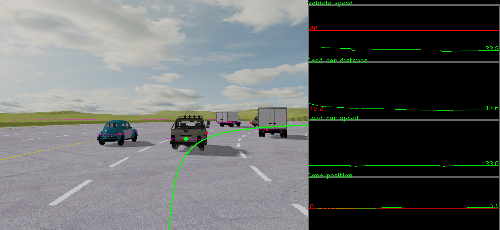
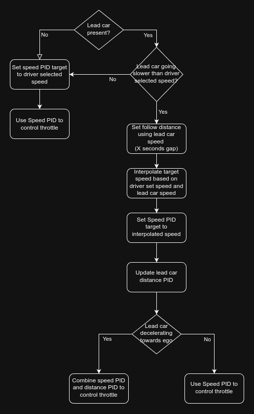

ADAS Simulator
A small motorway/car simulation using MetaDrive simulator. It simulates radar, lead car detection and path prediction for the development of ADAS algorithms.
For steering the predicted path is used to get relative distance to the lane center, and uses this distance error in a PID controller.
For throttle, the current set speed and lead car speed/distance is utilized to create the desired speed, which is fed to a PID controller. It follows the algorithm shown in the image below.
